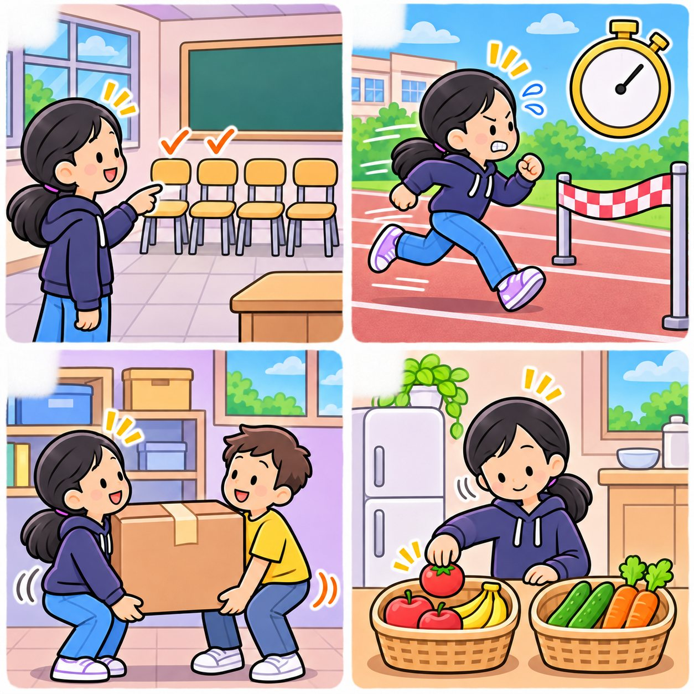
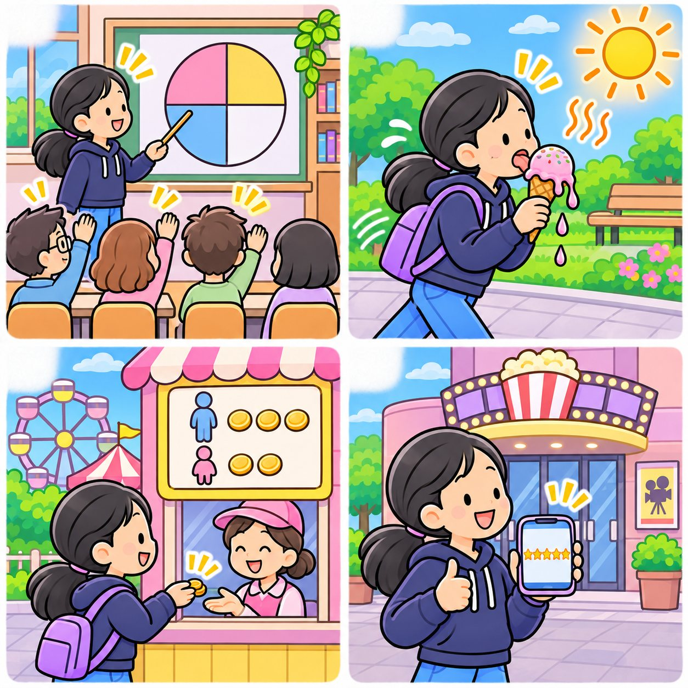

PART 1 · 쉬운 동사, 다른 뜻오른쪽 쪽은 가리고 먼저 해 봐요.
A이 문장, 무슨 뜻?
축구 경기가 1분 남았을 때, 코치가 선수들에게 이렇게 외쳤어요.
Every second counts!
여기서 count는 무슨 뜻?
영화를 보고 나온 친구가 엄지를 들며 이렇게 말했어요.
I’d rate it five stars!
여기서 rate는 무슨 뜻?
B내가 아는 뜻흔히 외우는 뜻 말고 아는 뜻을 더 쓰고, 아래 단어는 뜻이 비슷하면 유 · 반대면 반
count = 흔히 세다 +
count와matter()ignore()
rate = 흔히 비율 +
rate와fee()grade()
C영어로 써 보기count · rate 중 알맞은 단어를 넣어요 · 힌트는 문장 순서대로, 동사는 기본형
- 1나는 내 방에 있는 책을 세었다.I · the books · in my room
- 2그 도시는 빠른 속도로 커졌다.the city · grow · at a rapid
- 3너는 언제나 나를 믿어도 돼.you · can · always · me
- 4그 학교의 합격률은 90퍼센트이다.the school’s · pass · is · 90 percent
④ 강의READING 뒤에 강의 → 이 쪽 채점(해설 p.2) · 틀린 문장 다시 쓰기 → MAKE IT MINE
강의 보기
count하나씩 셈에 넣어요

1234셈에 든다는 건 빠뜨릴 수 없다는 뜻이기도 해요.In English count = to say numbers in order, one by one
여러 가지 뜻굵은 단어 앞뒤를 보고 짐작해 써요
- 1
Count the chairs in the room.
방에 있는 의자를 .
- 2
Every point counts in this game.수능
이 경기에서는 1점 1점이 .
- 3
You can count on Mina.수능
너는 미나를 돼.
- 4
A short walk counts as exercise.
짧은 산책도 운동으로 .
유의어 · 반의어
- 유의어matterYour feelings matter.네 감정은 소중해.count ②와 같은 자리. 목적어 없이 써요.
- 반의어ignoreJust ignore him.그냥 그를 무시해.일부러 빼놓고 봐요 — count와 반대.
유calculate계산하다, include포함하다반leave out빼다
rate무엇에 비해 얼마인지 매겨요

1234백 명 중 몇 명, 한 시간에 몇 킬로미터 — 기준에 대어 매긴 값이에요.In English rate = an amount compared with another
여러 가지 뜻
- 1
The birth rate is falling.
아기가 태어나는 이 낮아지고 있다.
- 2
Sea ice is melting at a fast rate.수능
바다 얼음이 빠른 로 녹고 있다.
- 3
Phone calls have a cheaper rate at night.수능
밤에는 전화 이 더 싸다.
- 4
Viewers rated the movie highly.수능
관객들은 그 영화를 높이 .
유의어 · 반의어
- 유의어feeIs there a fee?돈을 내야 하나요?rate ③과 같은 자리 — 무엇을 하려고 내는 돈.
- 유의어gradeShe grades tests.그녀는 시험지를 채점한다.rate ④와 같은 자리 — 점수를 매겨요.
유speed빠르기, price값, frequency잦은 정도
count는 ‘몇 개인가’, rate는 ‘무엇에 비해 얼마인가’를 말해요.
단어 · 예문 듣기
채점한 뒤 따라 읽어요
A Tie Decided by a Bowl그릇으로 가린 동점
NONFICTION 실제 이야기 · 사회 · 선거
본문 듣기
따라 읽어요
1밑줄 친 count · rate 뒤 □에 뜻 번호를 써요 4곳
2빈칸 (a) (b) (c)에 알맞은 한 단어를 쓰고, 근거가 된 말에 동그라미 해요.
count①세다②중요하다 · 가치가 있다③count on 믿다 · 기대다④count as ~로 치다 · 여기다rate①비율 · -률②속도③요금 · 값④평가하다 · 매기다
In November 2017, voters in one district of Virginia, in the United States, chose a member of the House of Delegates. On election day, Virginians also chose a governor, and the voting rate was the highest for a governor’s race in twenty years. The race was between Republican David Yancey and Democrat Shelly Simonds. More than 23,000 people voted, and the result was extremely close.
After the first count, Yancey was barely ahead. So the ballots were counted again. This time, Simonds was ahead by a single vote. But the next day, three judges looked at one ballot that had been set aside. The voter had filled in the bubbles for both candidates, but there was a line through Simonds’s bubble. The judges had to figure out what the voter really wanted. They decided that it was a vote for Yancey, so the two candidates had the same number of votes.
Under Virginia law, a tie like this is broken by drawing a name. On January 4, 2018, the two names were put into small containers inside a bowl. An election official pulled one out, and it was Yancey’s (a). His win let his party keep (b) of the House by 51 seats to 49.
Just one ballot helped decide which party would control the House. Two years later, Simonds ran against Yancey again. This time, the result was not (c) at all: she won about 58 percent of the vote. The story shows why every vote counts. Voters count on officials to treat each ballot fairly.
3처음 보는 뜻 도전핵심 그림으로 짐작해요
- 1The crowd counted down from ten.사람들은 10부터 .
- 2She is a first-rate pianist.그녀는 피아니스트다.
4글 내용 확인맞으면 T, 다르면 F
- 1Simonds was ahead after the first count.T · F
- 2The judges decided that the set-aside ballot was a vote for Yancey.T · F
- 3Simonds lost to Yancey again two years later.T · F
1영어로 쓰기count · rate 중 알맞은 단어로 · 힌트는 문장 순서대로, 동사는 기본형
- 1작은 친절도 큰 의미가 있다.small acts of kindness
- 2우리 팀은 너만 바라보고 있어.our team · is · you
- 3그 호텔의 하룻밤 숙박비는 80달러다.the hotel’s · is · 80 dollars · a night
- 4사람들은 그 앱에 별 다섯 개를 매겼다.people · the app · five stars
2알맞은 단어 넣기여섯 단어를 한 번씩만 써요. 모양을 바꿔도 돼요.
countratematterignorefeegrade
- 1My heart goes up when I run.
- 2He my advice.
- 3Your health more than money.
- 4I closed my eyes and to ten.
- 5The entrance is five dollars.
- 6Ms. Lee will our essays by Friday.
3해석 쓰기굵은 단어가 이 문장에서 무슨 뜻인지 생각하며 우리말로 옮겨 써요
- 1In a close game, every goal counts.
- 2The forest is disappearing at an alarming rate.
- 3Most students rated the class highly.
4영영 뜻으로 떠올리기p.10 단어 표는 가리고 써요
- an area of a city or state for votingd _ _ _ _ _ _ _
- a person who runs in an electionc _ _ _ _ _ _ _ _
- a piece of paper used to voteb _ _ _ _ _
- a person who decides in courtj _ _ _ _
- a box or can that holds thingsc _ _ _ _ _ _ _ _
- a person who works in governmento _ _ _ _ _ _ _
- a place as a lawmakers _ _ _
- in a right and equal wayf _ _ _ _ _